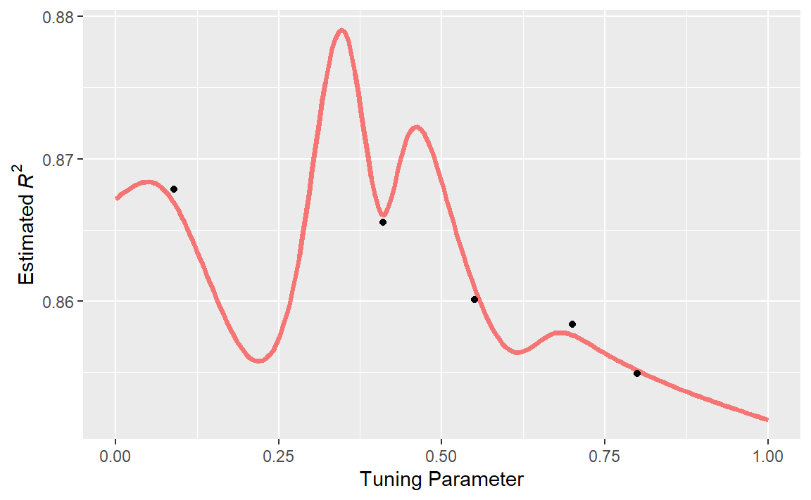
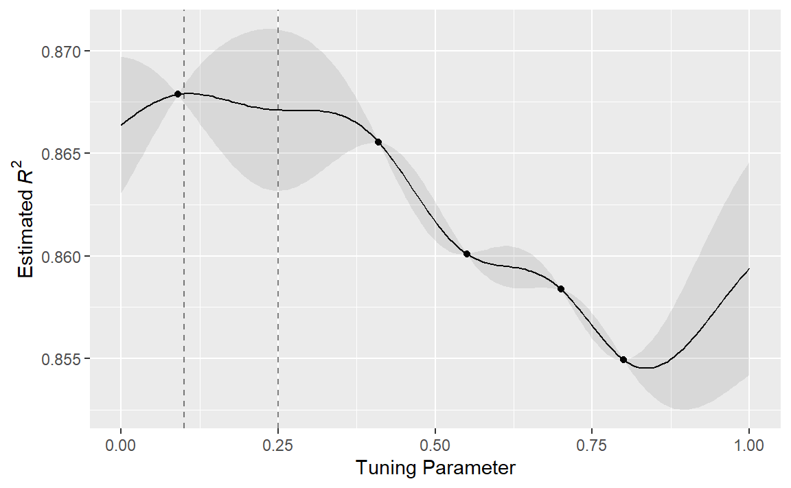
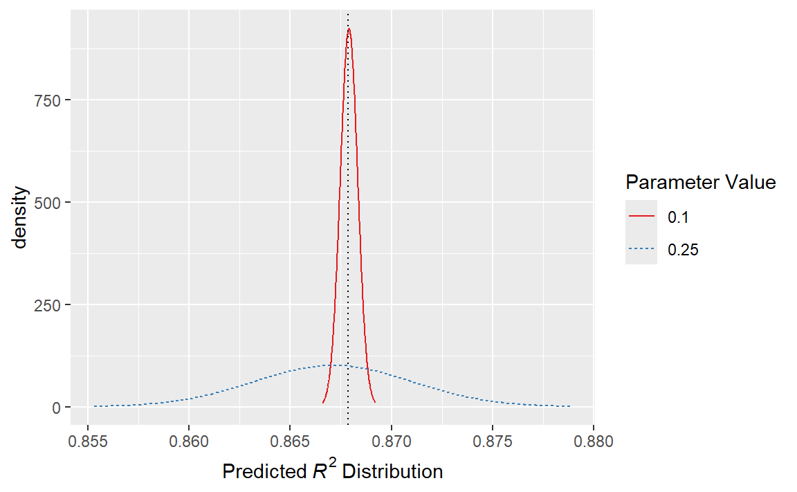
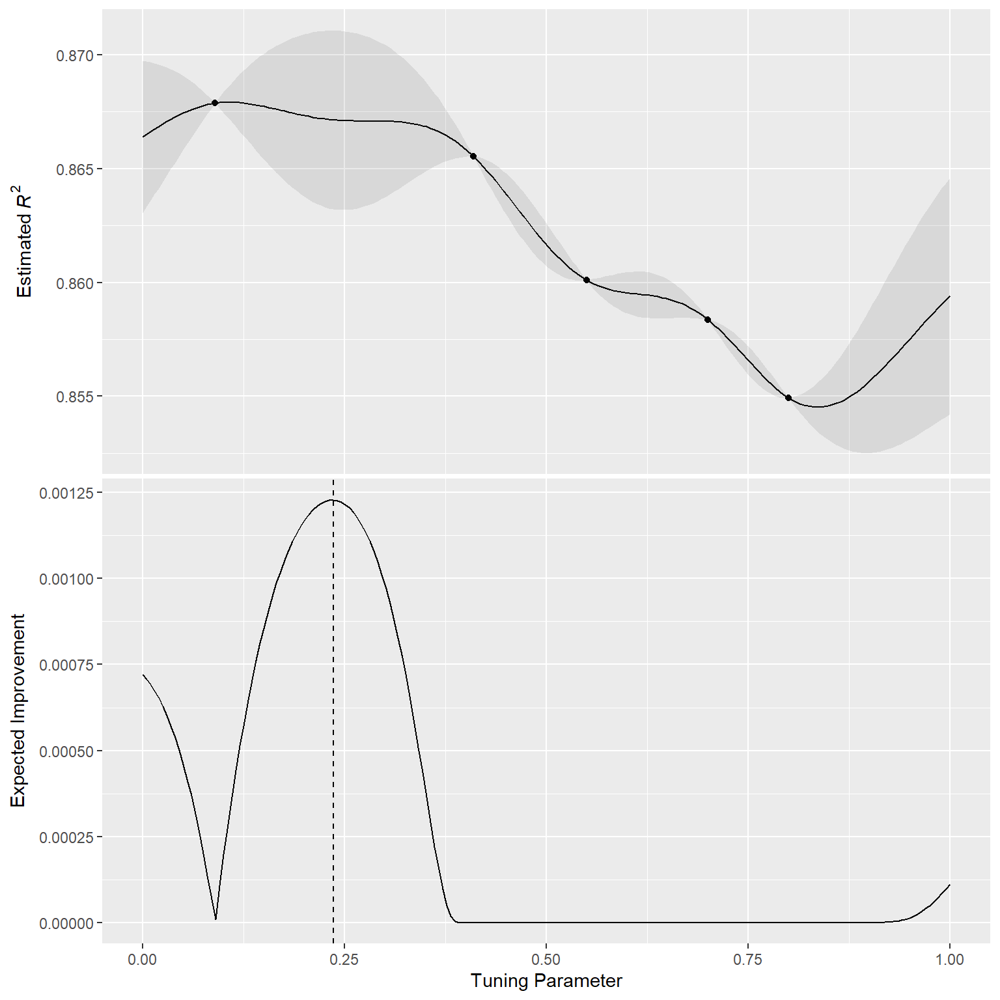
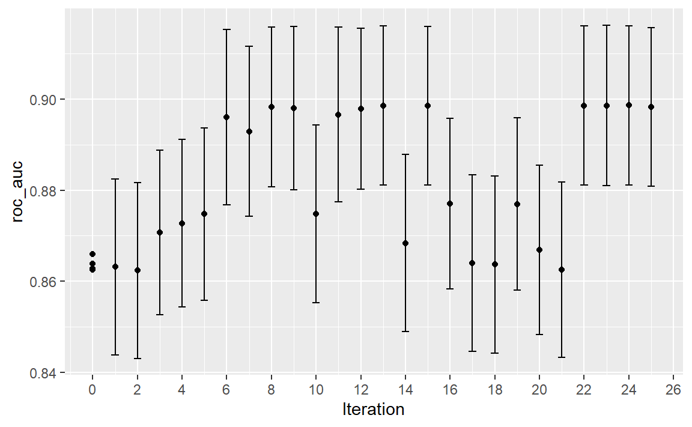
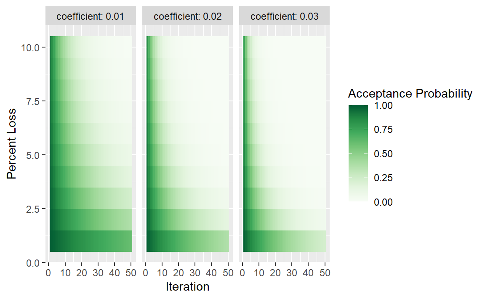
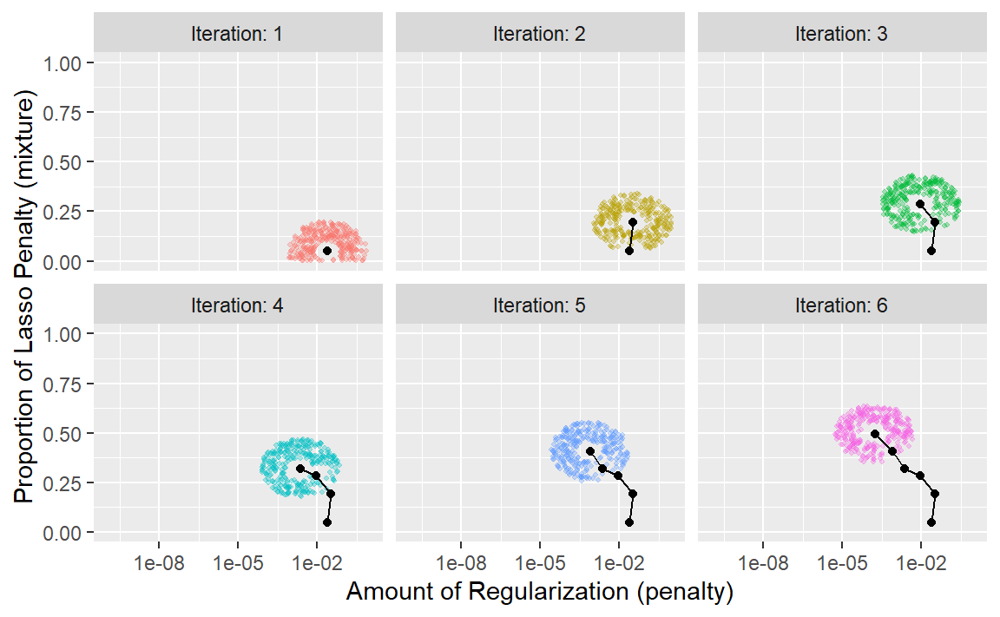
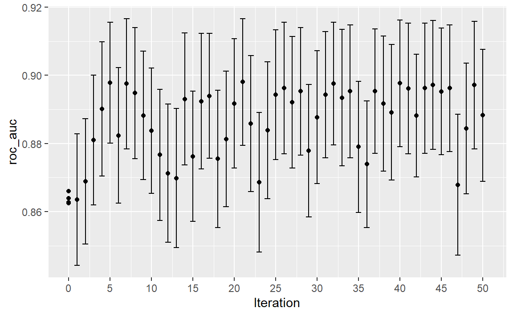
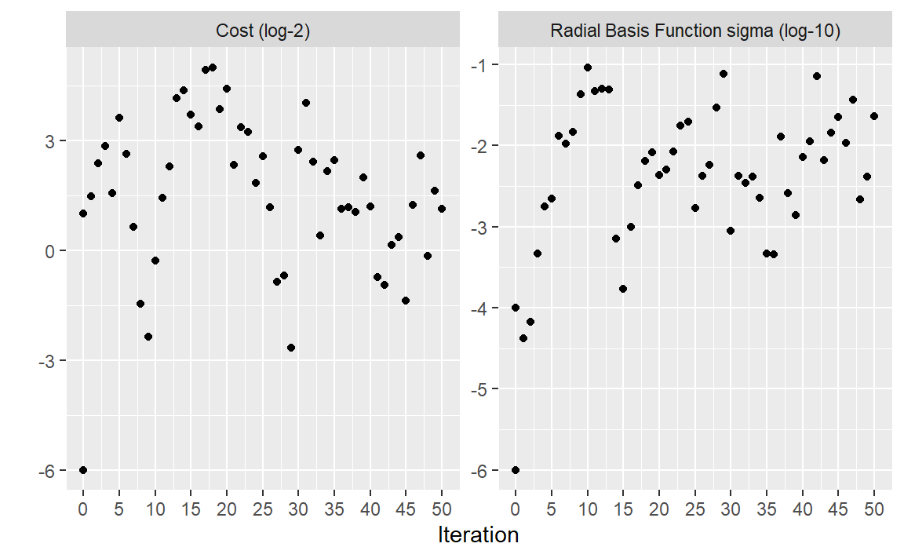

library(tidymodels)
#> ── Attaching packages ─────────────────────────────────── tidymodels 1.4.1 ──
#> ✔ broom 1.0.9 ✔ recipes 1.3.1
#> ✔ dials 1.4.2 ✔ rsample 1.3.1
#> ✔ dplyr 1.1.4 ✔ tailor 0.1.0
#> ✔ ggplot2 3.5.2 ✔ tidyr 1.3.1
#> ✔ infer 1.0.9 ✔ tune 2.0.0
#> ✔ modeldata 1.5.1 ✔ workflows 1.3.0
#> ✔ parsnip 1.3.3 ✔ workflowsets 1.1.1
#> ✔ purrr 1.1.0 ✔ yardstick 1.3.2
#> ── Conflicts ────────────────────────────────────── tidymodels_conflicts() ──
#> ✖ purrr::discard() masks scales::discard()
#> ✖ dplyr::filter() masks stats::filter()
#> ✖ dplyr::lag() masks stats::lag()
#> ✖ recipes::step() masks stats::step()
tidymodels_prefer()
data(cells)
cells <- cells %>% select(-case)
set.seed(1304)
cell_folds <- vfold_cv(cells)
roc_res <- metric_set(roc_auc)
svm_rec <-
recipe(class ~ ., data = cells) %>%
step_YeoJohnson(all_numeric_predictors()) %>%
step_normalize(all_numeric_predictors())
svm_spec <-
svm_rbf(cost = tune(), rbf_sigma = tune()) %>%
set_engine("kernlab") %>%
set_mode("classification")
svm_wflow <-
workflow() %>%
add_model(svm_spec) %>%
add_recipe(svm_rec)14 Iterative Search
第13章展示了网格搜索如何采用一组预定义的候选值，对它们进行评估，然后选择最佳设置。迭代搜索方法则采用不同的策略。在搜索过程中，它们会预测接下来要测试哪些值。当网格搜索不可行或效率低下时，迭代方法是优化调优参数的合理选择。
本章概述了两种搜索方法：
- 贝叶斯优化（Bayesian optimization），它使用统计模型来预测更好的参数设置。
- 模拟退火（simulated annealing），它采用全局搜索方法。
为了便于说明，我们使用与前一章相同的细胞特征数据，但更换了模型。本章采用支持向量机模型，因为它能对搜索过程提供清晰的二维可视化效果。
A Support Vector Machine Model
我们再次使用第13.2节中描述的细胞分割数据进行建模，并使用支持向量机（SVM）模型来演示迭代搜索方法。有关SVM模型的更多信息，请参见 M. Kuhn和Johnson（2013）。需要优化的两个调优参数是SVM的成本值和径向基函数核参数 \(\sigma\)。这两个参数都会对模型的复杂性和性能产生深远影响。
支持向量机（SVM）模型会用到点积，因此有必要对预测变量进行中心化和缩放处理。与多层感知器模型类似，该模型也能从主成分分析（PCA）特征提取中获益。不过，本章不会使用这第三个调优参数，以便我们能在二维空间中可视化搜索过程。
除了之前使用的对象（见第13.6节），还需要svm_rec、svm_spec和svm_wflow等tidymodels对象：
两个调优参数cost和rbf_sigma的默认参数范围是
cost()
#> Cost (quantitative)
#> Transformer: log-2 [1e-100, Inf]
#> Range (transformed scale): [-10, 5]
rbf_sigma()
#> Radial Basis Function sigma (quantitative)
#> Transformer: log-10 [1e-100, Inf]
#> Range (transformed scale): [-10, 0]为了说明，让我们稍微改变核参数的范围，以改进搜索的可视化效果：
在讨论迭代搜索的具体细节及其工作原理之前，让我们探究这个特定数据集的两个支持向量机（SVM）调优参数与ROC曲线下面积之间的关系。我们构建了一个非常大的规则网格，由2500个候选值组成，并通过重采样对该网格进行了评估。显然，这在常规数据分析中是不切实际的，而且效率极低。然而，它阐明了搜索过程应遵循的路径以及数值最优值出现的位置。
Figure 1 展示了对该网格的评估结果，其中颜色越浅表示模型性能越高（越好）。参数空间的左下对角线区域有一大片相对平缓的区域，性能较差。性能最佳的脊线出现在该空间的右上部分。黑点表示最佳设置。从性能不佳的平台区域到性能最佳的脊线区域的过渡非常陡峭。在脊线右侧紧邻的位置，ROC曲线下面积也出现了急剧下降。

以下搜索过程在继续之前至少需要一些重采样的性能统计数据。为此，下面的代码创建了一个位于参数空间平坦部分的小型规则网格。tune_grid()函数对该网格进行重采样：
set.seed(1401)
start_grid <-
svm_param %>%
update(
cost = cost(c(-6, 1)),
rbf_sigma = rbf_sigma(c(-6, -4))
) %>%
grid_regular(levels = 2)
set.seed(1402)
svm_initial <-
svm_wflow %>%
tune_grid(resamples = cell_folds, grid = start_grid, metrics = roc_res)
#> maximum number of iterations reached 0.01985804 0.01947119maximum number of iterations reached 0.01951676 0.01912962maximum number of iterations reached 0.01929118 0.01895888maximum number of iterations reached 0.01938124 0.01905198maximum number of iterations reached 0.01967913 0.01930207maximum number of iterations reached 0.02022452 0.01983573maximum number of iterations reached 0.0194954 0.01916201maximum number of iterations reached 0.0204274 0.01999696maximum number of iterations reached 0.01870142 0.01838042maximum number of iterations reached 0.01978898 0.01941516
collect_metrics(svm_initial)
#> # A tibble: 4 × 8
#> cost rbf_sigma .metric .estimator mean n std_err .config
#> <dbl> <dbl> <chr> <chr> <dbl> <int> <dbl> <chr>
#> 1 0.0156 0.000001 roc_auc binary 0.864 10 0.00864 pre0_mod1_post0
#> 2 0.0156 0.0001 roc_auc binary 0.863 10 0.00862 pre0_mod2_post0
#> 3 2 0.000001 roc_auc binary 0.863 10 0.00867 pre0_mod3_post0
#> 4 2 0.0001 roc_auc binary 0.866 10 0.00855 pre0_mod4_post0这个初始网格显示出相当相近的结果，没有任何单个点比其他点好很多。这些结果可以被下一节讨论的迭代调优函数接收，用作初始值。
Bayesian Optimization
贝叶斯优化技术会分析当前的重采样结果，并创建一个预测模型，以推荐尚未评估的调参参数值。然后对推荐的参数组合进行重采样。这些结果随后会被用于另一个预测模型，该模型会推荐更多供测试的候选值，依此类推。这个过程会进行设定好的迭代次数，或者直到不再有进一步的改进为止。Shahriari等人（2016）和Frazier（2018）对贝叶斯优化做了很好的介绍。
在使用贝叶斯优化时，主要关注点是如何创建模型以及如何选择该模型推荐的参数。首先，让我们考虑贝叶斯优化中最常用的技术——高斯过程模型。
A Gaussian process model
高斯过程（GP）（Schulz，Speekenbrink，and Krause，2018）模型是著名的统计技术，在空间统计学中有着悠久的历史（以“kriging methods”最为出名），它可以通过多种方式（包括贝叶斯模型）推导得出，详见 Rasmussen 和 Williams（2006）的参考文献。
从数学角度来讲，高斯过程（GP）是一组随机变量的集合，其联合概率分布为多元高斯分布。在我们的应用场景中，这组随机变量是调优参数候选值对应的性能指标集合。之前的初始网格就提供了四个样本，观测值分别为0.8639, 0.8627, 0.8625, 0.8659。这些值被假设服从多元高斯分布。定义高斯过程模型中自变量（预测变量）的输入是相应的调优参数值（如 Table 1 所示）。
| ROC | cost | rbf_sigma |
|---|---|---|
| 0.8639 | 0.01562 | 0.000001 |
| 0.8627 | 0.01562 | 0.000100 |
| 0.8625 | 2.00000 | 0.000001 |
| 0.8659 | 2.00000 | 0.000100 |
高斯过程模型由其均值函数和协方差函数来定义，不过后者对高斯过程模型的性质影响更大。协方差函数通常根据输入值（记为 \(x\) ）进行参数化。例如，一种常用的协方差函数是平方指数函数：
\[ cov(x_i, x_j) = \exp\left(-\frac{1}{2}|x_i - x_j|^2\right) + \sigma^2_{ij} \]
其中 \(\sigma^2_{ij}\) 是一个恒定的误差方差项，当 \(i = j\) 时，该误差方差项为零。这个方程可转化为：随着两个调优参数组合之间距离的增加，性能指标之间的协方差呈指数增长。该方程的性质还意味着，结果指标的变异在已观测到的点处达到最小（即当 \(|x_i−x_j|^2\) 为零时）。这种协方差函数的特性使得高斯过程即便在只有少量数据的情况下，也能够表征模型性能与调优参数之间高度非线性的关系。然而，在某些情况下，拟合这些模型可能会很困难，而且随着调优参数组合数量的增加，模型的计算成本会变得更高。
该模型的一个重要优点是，由于指定了完整的概率模型，对新输入的预测能够反映结果的整个分布。换句话说，新的性能统计数据可以从均值和方差两方面进行预测。假设正在考虑两个新的调优参数。在 Table 2 中，候选参数A的平均ROC值略高于候选参数B（当前最佳值为0.8659）。然而，其方差是B的四倍。这是好还是坏呢？选择选项A风险更高，但潜在回报也可能更高。方差的增加还反映出，这个新值与现有数据的距离比B更远。下一节将更详细地探讨高斯过程（GP）预测在贝叶斯优化中的这些方面。
| candidate | mean | variance |
|---|---|---|
| A | 0.90 | 0.000400 |
| B | 0.89 | 0.000025 |
贝叶斯优化是一个迭代过程。基于四个结果的初始网格，拟合GP模型，预测候选参数，并选择第五个调优参数组合。我们计算新配置的性能估计值，然后利用这五个现有结果重新拟合GP模型（以此类推）。
Acquisition functions
一旦高斯过程拟合了当前数据，它将如何被使用呢？我们的目标是选择下一个最有可能比当前最佳结果“更好”的调优参数组合。实现这一目标的一种方法是创建一个大型候选集（或许可以采用空间填充设计），然后对每个候选参数组合进行均值和方差预测。利用这些信息，我们就能选出最有利的调优参数值。
一类被称为 Acquisition 函数的目标函数有助于平衡均值和方差。回想一下，高斯过程模型的预测方差主要由它们与现有数据的距离决定。新候选点的预测均值和方差之间的权衡通常从探索和利用的角度来看待：
探索会使选择偏向于观测到的候选模型较少（如果有的话）的区域。这往往会给方差较高的候选模型赋予更大的权重，并侧重于发现新的结果。
利用主要依靠均值预测来找到最佳（均值）值。它侧重于已有的结果。
为了说明这一点，让我们来看一个简单的例子，其中有一个参数，其值在[0, 1]之间，性能指标是 \(R^2\)。真实函数如 Figure 2 所示，同时还有五个具有现有结果的候选值（以点表示）。

对于这些数据，Figure 3 展示了高斯过程（GP）模型的拟合情况。阴影区域表示均值±1标准误差。两条竖线标示了两个候选点，后续会对其进行更详细的研究。阴影置信区域展示了平方指数方差函数；该区域在数据点之间会变得非常大，而在现有数据点处则收敛到零。

这种非线性趋势穿过每个观测点，但该模型并非完美无缺。在真实最优设置附近没有观测点，而在这个区域，拟合效果本可以好得多。尽管如此，高斯过程（GP）模型仍能有效地为我们指明正确方向。
从纯粹的利用角度来看，最佳选择应该是选取具有最佳平均预测值的参数值。在这里，这个值是0.106，刚好在现有最佳观测点0.09的右侧。
作为一种鼓励探索的方式，一种简单（但不常使用）的方法是找到与最大置信区间相关的调优参数。例如，通过为 \(R^2\) 置信界限使用单一标准差，下一个要采样的点将是0.236。这稍微更深入到没有观测结果的区域。增加上界中使用的标准差数量会将选择进一步推向空白区域。
最常用的“Acquisition”函数之一是期望改进（expected improvement）。改进的概念需要当前最佳结果的数值（这与置信区间方法不同）。由于高斯过程（GP）可以用一个分布来描述新的候选点，我们可以利用改进发生的概率，对分布中显示出改进的部分进行加权。
例如，考虑两个候选参数值0.10和0.25（如 Figure 3 中的竖线所示）。利用拟合的GP模型，它们的预测 \(R^2\) 分布如 Figure 4 所示，同时还有一条当前最佳结果的参考线。

仅考虑 \(R^2\) 预测均值时，0.10的参数值是更好的选择（参见 Table 3 ）。平均而言，0.25这个调优参数建议被预测为比当前最佳值更差。然而，由于它具有更高的方差，其整体概率分布中高于当前最佳值的区域更大。因此，它具有更大的期望改进：
| Parameter Value | Mean | Std Dev | Expected Improvement |
|---|---|---|---|
| 0.10 | 0.8679 | 0.0004317 | 0.000190 |
| 0.25 | 0.8671 | 0.0039301 | 0.001216 |
当在整个调优参数范围内计算预期改进时，如 Figure 5 所示，建议的采样点更接近0.25而非0.10。

已经提出并讨论了许多获取函数；在tidymodels中，期望改进是默认的。
The tune_bayes() function
要通过贝叶斯优化实现迭代搜索，请使用tune_bayes()函数。其语法与tune_grid()非常相似，但有几个额外的参数：
iter是最大搜索迭代次数。initial可以是整数、使用tune_grid()生成的对象，或者是某个竞赛函数。使用整数时，它指定了在第一个高斯过程模型之前采样的空间填充设计的大小。objective是一个用于确定应使用哪种“Acquisition”函数的参数。tune包中包含可在此处传递的函数，例如exp_improve()或conf_bound()。param_info指定了参数的范围以及所使用的任何转换。这些用于定义搜索空间，当默认参数对象不够用时，param_info会被用来覆盖默认值。
control参数使用control_bayes()的结果。其中一些有用的参数包括：
no_improve是一个整数，如果在no_improve次迭代内没有发现更优的参数，它将停止搜索。uncertain也是一个整数（或Inf），如果在uncertain次迭代内没有改进，它将进行一次不确定性抽样。这会选择具有较大变异性的下一个候选对象，由于它不考虑均值预测，因此具有纯粹探索的效果。verbose是一个逻辑值，它会在搜索过程中打印日志信息。
让我们使用第14.1节中的首个支持向量机（SVM）结果作为高斯过程模型的初始基础。回想一下，对于这个应用，我们希望最大化ROC曲线下的面积。我们的代码如下：
ctrl <- control_bayes(verbose = TRUE)
set.seed(1403)
svm_bo <-
svm_wflow %>%
tune_bayes(
resamples = cell_folds,
metrics = roc_res,
initial = svm_initial,
param_info = svm_param,
iter = 25,
control = ctrl
)
#> maximum number of iterations reached 4.047214e-05 4.046292e-05
#> maximum number of iterations reached 5.209914e-05 5.211268e-05
#> maximum number of iterations reached 6.032941e-05 6.035564e-05
#> maximum number of iterations reached 5.733733e-05 5.734185e-05
#> maximum number of iterations reached 6.465712e-05 6.467571e-05
#> maximum number of iterations reached 3.238272e-05 3.237372e-05
#> maximum number of iterations reached 3.48257e-05 3.481683e-05
#> maximum number of iterations reached 4.664036e-05 4.664312e-05
#> maximum number of iterations reached 2.853935e-05 2.853362e-05
#> maximum number of iterations reached 3.949777e-05 3.949933e-05
#> maximum number of iterations reached 0.0004813998 0.000481399
#> maximum number of iterations reached 0.0004770225 0.0004770218
#> maximum number of iterations reached 0.0004500721 0.0004500714
#> maximum number of iterations reached 0.0004592099 0.0004592092
#> maximum number of iterations reached 0.0004819724 0.0004819717
#> maximum number of iterations reached 0.0004855306 0.0004855298
#> maximum number of iterations reached 0.0004604447 0.0004604441
#> maximum number of iterations reached 0.0005029539 0.0005029531
#> maximum number of iterations reached 0.0004475102 0.0004475095
#> maximum number of iterations reached 0.0004798083 0.0004798075
#> maximum number of iterations reached 0.0151271 0.01501914
#> maximum number of iterations reached 0.01495382 0.01484879
#> maximum number of iterations reached 0.0142988 0.01420819
#> maximum number of iterations reached 0.01459744 0.01450266
#> maximum number of iterations reached 0.01515703 0.01504754
#> maximum number of iterations reached 0.0151731 0.01506278
#> maximum number of iterations reached 0.0145107 0.01441776
#> maximum number of iterations reached 0.01570231 0.01557913
#> maximum number of iterations reached 0.01420909 0.01412161
#> maximum number of iterations reached 0.01490685 0.01480023搜索过程从ROC曲线下面积的初始最佳值 0.8659 开始。高斯过程模型利用这四个统计量来构建模型。大型候选集通过“期望改进”函数自动生成并评分。
用于查询结果的函数与网格搜索中使用的函数相同（例如，collect_metrics()等）。例如：
show_best(svm_bo)
#> Warning in show_best(svm_bo): No value of `metric` was given; "roc_auc" will
#> be used.
#> # A tibble: 5 × 9
#> cost rbf_sigma .metric .estimator mean n std_err .config .iter
#> <dbl> <dbl> <chr> <chr> <dbl> <int> <dbl> <chr> <int>
#> 1 31.8 0.00160 roc_auc binary 0.899 10 0.00785 iter24 24
#> 2 30.8 0.00191 roc_auc binary 0.899 10 0.00791 iter23 23
#> 3 31.4 0.00166 roc_auc binary 0.899 10 0.00784 iter22 22
#> 4 31.8 0.00153 roc_auc binary 0.899 10 0.00783 iter13 13
#> 5 30.8 0.00163 roc_auc binary 0.899 10 0.00782 iter15 15autoplot()函数有几种用于迭代搜索方法的选项。Figure 6 展示了通过使用autoplot(svm_bo, type = "performance")，结果在搜索过程中是如何变化的。

autoplot() method is used with type = "performance"
另一种类型的图表使用type = "parameters"，它展示了参数值在迭代过程中的变化。
下方的动画可视化了搜索结果。黑色的“××”值表示包含在svm_initial中的初始值。左上角的蓝色面板显示了ROC曲线下面积的预测均值。右上角的红色面板展示了ROC曲线下面积的预测变异性（方差），而底部的图表则可视化了预期改进。在每个面板中，颜色越深表示数值的吸引力越低（例如，均值小、变异性大以及改进小）。
在搜索的最初几次迭代中，虽然预测的平均表面非常不准确，但它确实有助于将过程引导至性能良好的区域。换句话说，高斯过程模型虽然存在错误，但事实证明它非常有用。在最初的十次迭代内，搜索就在最优位置附近进行采样。
虽然最佳的调优参数组合位于参数空间的边界上，但贝叶斯优化往往会选择边界另一侧的新点。尽管我们可以调整探索与利用的比例，但搜索往往会在早期对边界点进行采样。
如果搜索以初始网格为种子，那么填充空间设计可能会是比常规设计更好的选择。它会对参数空间中更多独特的值进行采样，并能在早期迭代中改进对标准差的预测。
最后，如果用户中断了tune_bayes()的计算，该函数会返回当前结果（而不是产生错误）。
Simulated Annealing
模拟退火（Simulated annealing，SA）（Kirkpatrick，Gelatt 和 Vecchi，1983；Van Laarhoven 和 Aarts，1987）是一种受金属冷却过程启发的通用非线性搜索程序。它是一种全局搜索方法，能够有效遍历多种不同类型的搜索空间，包括不连续函数。与大多数基于梯度的优化程序不同，模拟退火可以重新评估之前的解决方案。
Simulated annealing search process
使用模拟退火的过程始于一个初始值，并在参数空间中进行受控的随机游走。每个新的候选参数值都是前一个值的微小扰动，这使得新点保持在局部邻域内。
对候选点进行重采样以获取其相应的性能值。如果该性能值比之前参数的结果更好，则将其作为新的最优解并继续该过程。如果结果比之前的值更差，搜索程序仍可能使用该参数来确定后续步骤。这取决于两个因素。首先，随着性能变差，接受不良结果的可能性会降低。换句话说，与性能大幅下降的结果相比，略有变差的结果被接受的概率更高。另一个因素是搜索迭代的次数。随着搜索的进行，模拟退火希望接受更少的次优值。基于这两个因素，不良结果的接受概率可以形式化表示为：
\[ \operatorname{Pr}[\text{accept suboptimal parameters at iteration } i] = \exp(c\times D_i \times i) \]
其中i是迭代次数，\(c\) 是用户指定的常数，\(D_i\) 是新旧值之间的百分比差异（负值意味着结果更差）。对于较差的结果，我们会计算接受概率，并将其与一个随机均匀数进行比较。如果随机数大于该概率值，搜索会舍弃当前参数，下一次迭代会在之前值的邻域内生成候选值。否则，下一次迭代会基于当前（次优）值形成下一组参数。
模拟退火的接受概率允许搜索朝着错误的方向进行，至少在短期内是这样，但从长远来看，有可能找到参数空间中一个好得多的区域。
接受概率会受到怎样的影响？Figure 7 中的热图展示了接受概率如何随着迭代次数、性能以及用户指定的系数而变化。

用户可以调整系数，以找到适合自己需求的概率分布。在finetune::control_sim_anneal()中，这个cooling_coef参数的默认值为0.02。减小该系数会使搜索过程对不佳结果更加宽容。
这一过程会持续设定好的迭代次数，但如果在预先确定的迭代次数内没有出现全局最优结果，就会停止。不过，设置一个重启阈值会非常有帮助。如果出现一连串的失败，该功能会重新采用上一次的全局最优参数设置并重新开始。
主要的重要细节是定义如何在迭代之间扰动调优参数。文献中对此有多种方法。我们采用了Bohachevsky, Johnson, and Stein（1986）提出的一种名为广义模拟退火（generalized simulated annealing）的方法。对于连续的调优参数，我们定义一个小半径来指定局部“邻域”。例如，假设有两个调优参数，每个参数的取值范围都在0到1之间。模拟退火过程会在周围的半径范围内生成随机值，并随机选择一个作为当前的候选值。
在我们的实现中，邻域是通过根据参数对象的范围将当前候选值缩放到0到1之间来确定的，因此0.05到0.15之间的半径值似乎是合理的。对于这些值，搜索从参数空间的一侧到另一侧最快大约需要10次迭代。半径的大小控制着搜索探索参数空间的速度。在我们的实现中，会指定一个半径范围，因此不同大小的“局部”定义了新的候选值。
为了说明这一点，我们将使用glmnet的两个主要调优参数：
总正则化量（
penalty）。该参数的默认范围是 \(10^{-10}\) 到 \(10^{0}\) 。通常对该参数进行以10为底的对数转换。Lasso惩罚的比例（
mixture）。它在0到1之间有界，无需转换。
该过程从初始值penalty = 0.025和mixture = 0.050开始。使用一个在0.050到0.015之间随机波动的半径，对数据进行适当缩放，在初始点周围的半径范围内生成随机值，然后随机选择一个作为候选值。为便于说明，我们假设所有候选值都是更优的。利用这个新值，生成一组新的随机邻近值，从中选择一个，依此类推。Figure 8 展示了搜索过程向左上角推进的六个迭代步骤。

请注意，在某些迭代过程中，沿半径生成的候选集不包括参数边界之外的点。此外，我们的实现会使下一个调优参数配置的选择倾向于远离与先前配置非常相似的新值。
对于非数值参数，我们会为参数值的变化频率分配一个概率。
The tune_sim_anneal() function
要通过模拟退火实现迭代搜索，请使用tune_sim_anneal()函数。该函数的语法与tune_bayes()几乎相同。它没有关于采集函数或不确定性抽样的选项。control_sim_anneal()函数包含一些用于定义局部邻域和冷却调度的细节：
no_improve，对于模拟退火算法而言，是一个整数，若在no_improve次迭代内未发现全局最优结果或改进结果，该整数将使搜索停止。被接受的次优参数或被丢弃的参数均算作“无改进”。restart是指在从之前的最佳结果重新开始之前，没有新的最佳结果出现的迭代次数。radius是一个取值在(0, 1)上的数值向量，它定义了初始点周围局部邻域的最小和最大半径。flip是一个概率值，它定义了改变分类参数或整数参数值的可能性。cooling_coef是 \(\exp(c\times D_i \times i)\) 中的 \(c\) 系数，它调节接受概率在迭代过程中的下降速度。cooling_coef的值越大，接受次优参数设置的概率就越低。
对于细胞分割数据，其语法与之前使用的函数非常一致：
ctrl_sa <- finetune::control_sim_anneal(verbose = TRUE, no_improve = 10L)
set.seed(1404)
svm_sa <-
svm_wflow %>%
finetune::tune_sim_anneal(
resamples = cell_folds,
metrics = roc_res,
initial = svm_initial,
param_info = svm_param,
iter = 50,
control = ctrl_sa
)模拟退火过程在4个不同的迭代中发现了新的全局最优解。最早的改进出现在第5次迭代，最终的最优解出现在第27次迭代。总体最佳结果出现在第27次迭代，此时ROC曲线下的平均面积为0.8985（初始最佳值为0.8659）。在迭代过程中，分别在第13、21、35和43次迭代时进行了4次重启，同时还有12个候选解被舍弃。（此处过程描述可能不准确，参考实际日志信息）
与其他tune_*()函数一样，相应的autoplot()函数会对结果进行可视化评估。使用autoplot(svm_sa, type = "performance")可以显示迭代过程中的性能（ Figure 9 ），而autoplot(svm_sa, type = "parameters")则会绘制性能与特定调优参数值的对比图（ Figure 10 ）。

autoplot() method is used with type = "performance"

autoplot() method is used with type = "parameters"
搜索路径的可视化有助于理解搜索过程在哪些地方表现良好，在哪些地方出现了偏差：
与tune_bayes()类似，手动停止执行将会返回已完成的迭代。
Chapter Summary
本章介绍了两种用于优化调优参数的迭代搜索方法。贝叶斯优化利用在现有重采样结果上训练的预测模型来推荐调优参数值，而模拟退火则在超参数空间中遍历以寻找合适的值。这两种方法无论是单独使用，还是作为初始网格搜索之后的后续方法来进一步微调性能，都能有效地找到合适的参数值。